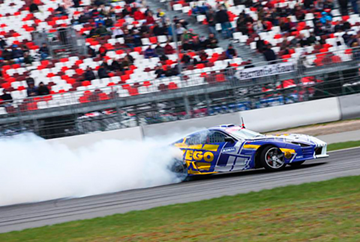
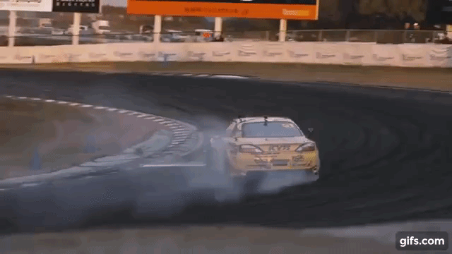
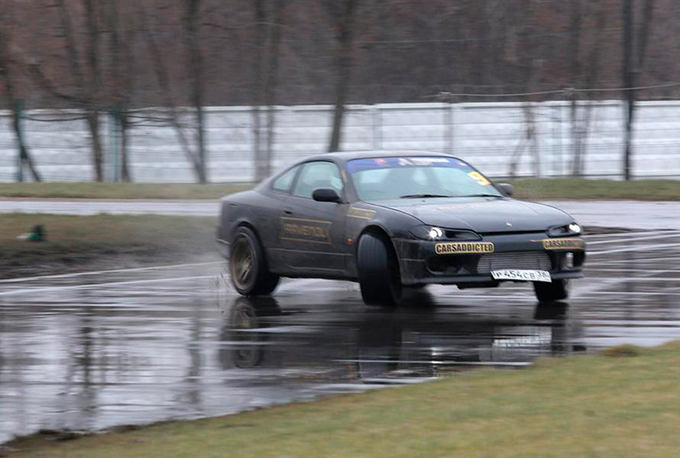

Если бы не коронавирус, сезон 2020 года для российского дрифта мог стать знаковым и прорывным: впервые заезды должны были показать по телевизору. Телеканал «Матч ТВ» купил права на трансляции у «Российской дрифт серии» (РДС/RDS) — главного организатора этих соревнований в стране.
Впрочем, и без телеаудитории российский дрифт не обделён вниманием. На этапы в 2019 году приходили до 18 500 зрителей, что сопоставимо со средней посещаемостью футбольных матчей Российской премьер-лиги. Ни одни другие гонки не вызывают такого интереса у россиян — конечно, за исключением «Формулы-1» (посмотреть на Гран-при России в Сочи приходят до 60 000 человек).
Причин для такой популярности несколько. Главная — зрелищность. В каждый поворот машины входят в заносе, часто на скорости более 100 км/ч, и при этом движутся почти перпендикулярно трассе — то есть едут боком. Всё это сопровождается эффектным дымом из-под колёс.

Заезды парные: сначала один пилот «убегает» по заданной траектории, а второй пытается держаться на хвосте максимально близко к первому. Затем гонщики меняются ролям. Судьи оценивают, как каждый входил в повороты, насколько близко ехал к сопернику (или смог оторваться от преследователя), а также как быстро и зрелищно ехал. Проигравший выбывает, победитель идёт дальше до финала по олимпийской системе.
Трассы в дрифте компактные, поэтому зрителям видно всё происходящее от старта до финиша. В большинстве кольцевых автогонок, например, у «Формулы-1», с трибуны просматривается лишь небольшой отрезок. В этом у дрифта также преимущество.
Этапы топовой гоночной серии RDS GP проходят в разных городах: в Москве, Санкт-Петербурге, Сочи, Рязани, Нижнем Новгороде, Красноярске и Владивостоке. Всего в серии около сотни пилотов, представляющих около десятка команд.
Часто на этапы заявляются мировые звёзды дрифта из Японии и Европы, а российский чемпионат регулярно называют в числе трёх-пяти самых сильных в мире — это тоже сказывается на интересе к RDS GP. Как и заграничные победы главной звезды русского дрифта — красноярца Георгия Чивчяна по кличке Гоча. Он выступал в Европе и в США, но чаще — на родине дрифта в Японии, где ещё в 2013 году поразил местную публику своим мастерством. В 2018 и 2019 году Чивчян победил в Межконтинентальном кубке по дрифту.

Дрифт зародился в Японии как нелегальная уличная субкультура в 1980-х годах. Соревновательной дисциплиной дрифт стал там в 2001 году, в 2004-м он пришёл в США.
В России про дрифт многие узнали после выхода фильма «Тройной форсаж. Токийский дрифт» в 2006 году. Но к тому времени на востоке страны уже были энтузиасты, которые быстро сформировали сильнейшие школы дрифта в России — красноярскую и владивостокскую.
Сказалась близость к Японии, откуда в восточные регионы завозили подержанные праворульные машины, в том числе подходящие для дрифта спортивные заднеприводные Nissan Silvia, Toyota Supra и другие. Запчасти для их тюнинга здесь также были доступнее, чем в европейской части России. Позже сибирские и дальневосточные пилоты начнут регулярно ездить соревноваться в Японию и принимать родоначальников дрифта во Владивостоке.
Поначалу поклонники дрифта осваивали езду боком на парковках супермаркетов и дорогах общего пользования, нарушая ПДД. Однако уже в 2005 году во Владивостоке прошёл первый любительский чемпионат по дрифту. Затем культура стала двигаться на запад: в 2007 в Подмосковье появилась гоночная серия «Формула дрифт». Она просуществовала четыре года, но так и не смогла стать коммерчески успешным проектом.
Зато это удалось РДС. Серию в 2009 году создал гонщик Тимофей Кошарный, позже к проекту присоединился профессиональный управленец Александр Смоляр. Они стали продавать билеты на соревнования, а в 2010 году привлекли первого крупного спонсора — бренд смазочных материалов Aimol Дмитрия Добровольского.
В 2015 году Добровольский выкупил РДС. Сумму сделки стороны не раскрывают. «Я купил не убыточный проект, — говорил Дмитрий. — Благодаря разумному, жёсткому стилю руководства Саши Смоляра РДС удалось в 2014–2015 годах стать более-менее коммерчески успешной структурой. Поэтому мне как бизнесмену было проще всё это вывести на новый уровень. Я купил не идею, а нормальный стартап».

До коронавируса по многим показателям РДС росла такими темпами, что её будущее вселяло оптимизм, утверждает Дмитрий Добровольский. Он сетует: «Зимой мы вели много переговоров с представителями крупных мировых компаний. Но сейчас они все приостановлены. Думаю, мы будем отброшены назад».
Но это произойдёт не сразу. На 2020 год у большинства пилотов-участников все бюджеты подтверждены, машины готовы, есть запасы шин и запчастей. Предварительно РДС планирует провести в этом сезоне шесть этапов (столько же было и в 2019 году), начиная с 11 июля.
«Так что ключевой вопрос: что будет в 2021 году, насколько спонсоры сократят финансирование, — рассуждает Добровольский. — А это однозначно произойдёт, не сомневаюсь. Ну, будем выживать, помогать командам и самим себе».
Но есть и обнадёживающие новости: в апреле Министерство спорта РФ официально признало дрифт спортивной дисциплиной, включив его во всероссийский реестр видов спорта. Это означает, что эти гонки окончательно выходят из «серой зоны». Благодаря этому организаторы дрифт-соревнований могут рассчитывать на поддержку со стороны властей, особенно в регионах. «Достаточно, чтобы дали площадку и помогли с охраной, со скорой, с пожарными — всё остальное организаторы делают сами. Я думаю, это может стать стимулом для развития дисциплины в России», — резюмирует Добровольский.
По сравнению с другими видами автоспорта (и не только авто) дрифту будет легче адаптироваться к кризису. Здесь нет жёстких требований к автомобилю, можно ездить даже на «жигулях». Поэтому у дрифтеров есть пространство для инженерных манёвров, если им придётся экономить. Впрочем, и до кризиса это была ещё одна фишка дрифта, которая также позволила ему завоевать внимание публики: каждый автомобиль здесь уникален.